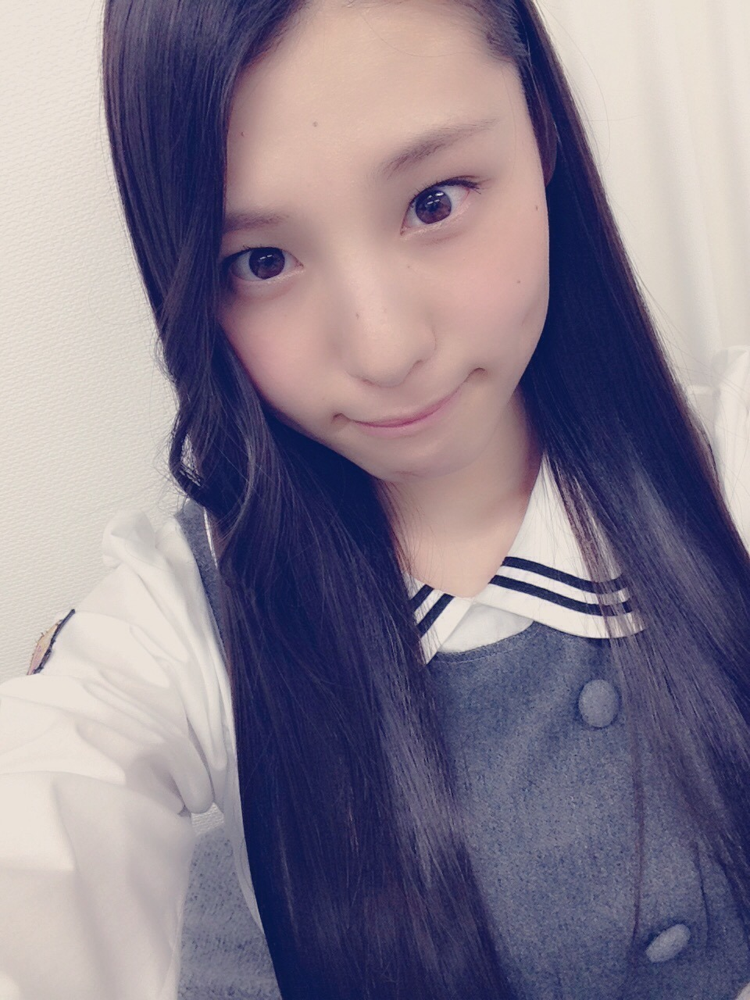
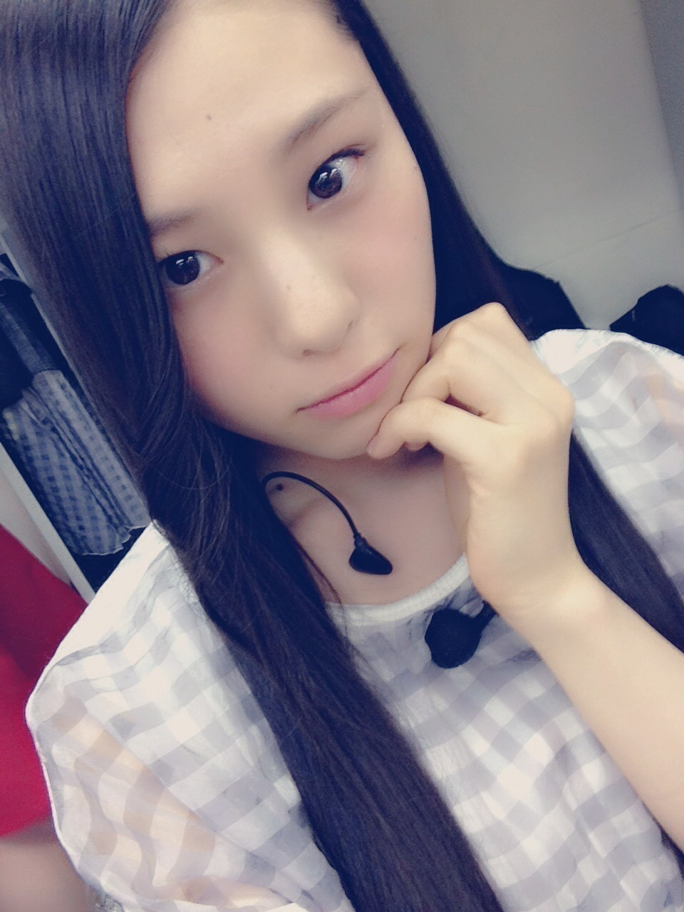
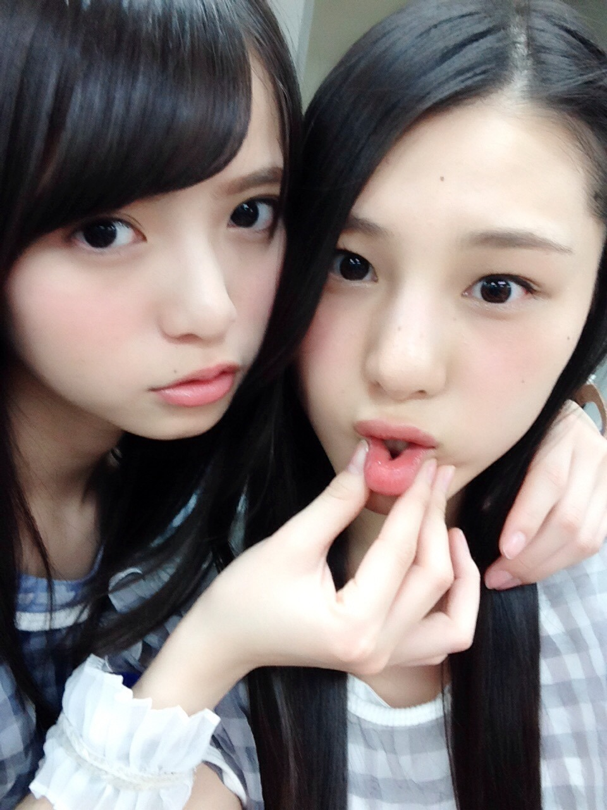
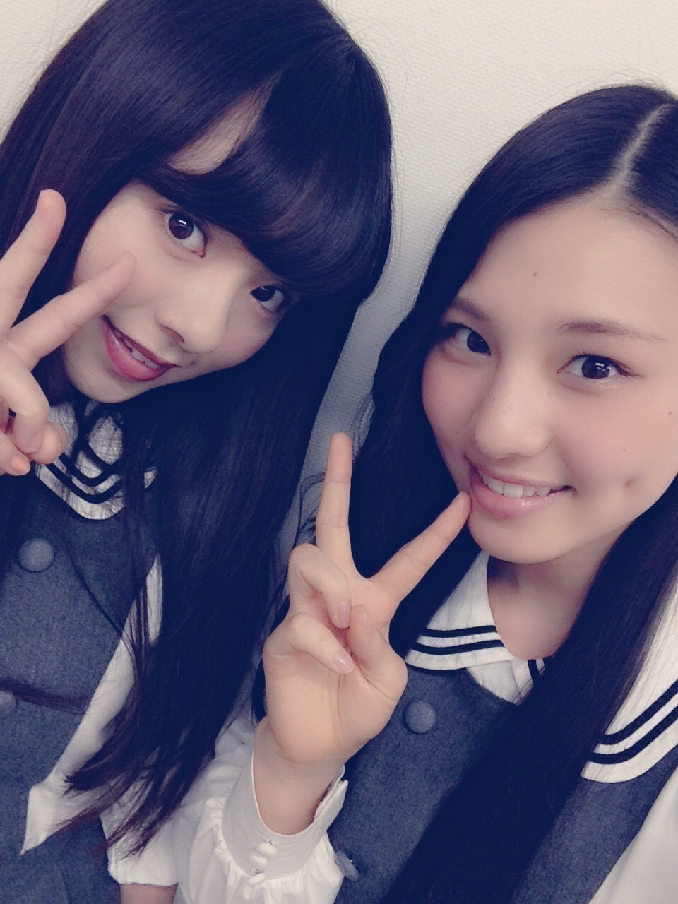
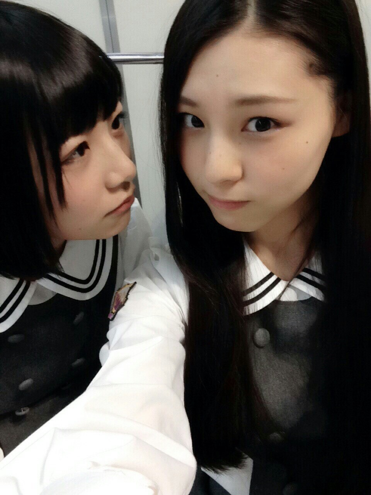
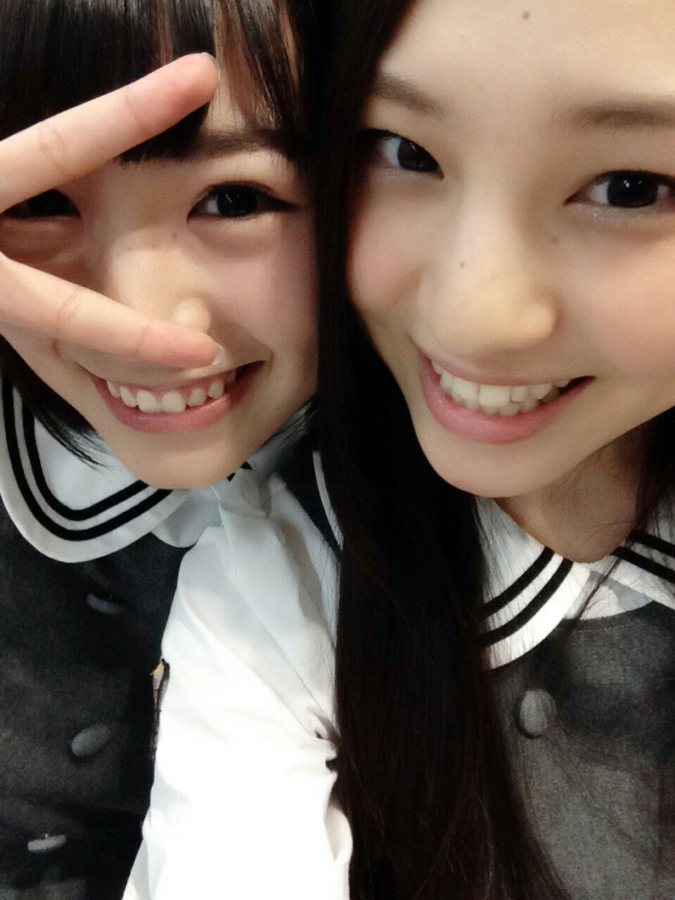
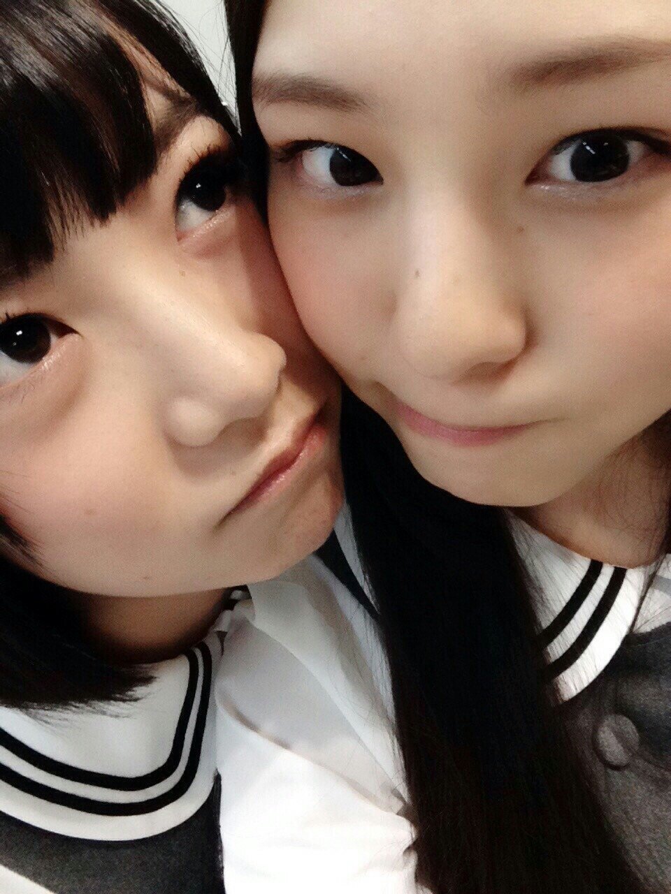

| 2015/03 25 Wed | 違い 同じではないこと_(． ．*)vol.17 |
おはようございまーす！
さがらいおりです！

11 thシングル｢命は美しい｣
オリコンデイリーランキング 1 位！
そして、初週 50 万枚突破！！
ありがとうございます♡！
たくさんの方に
聞いてもらえてると思うと
とっても嬉しいです♪♪

これからもよろしくお願いますm(_ _)m
そして昨日は受験生の方の中から抽選で当たった学生さんを対象にした
｢受験サプリpresents おどる！うたう！大卒業式！｣
というライブに行ってきました！！
氣志團さんに初めてお会いして
とっても優しくて気さくな方達で
乃木團とのコラボも
すごいカッコ良くて楽しかったです♪♪

飛鳥ちゃんのドラムもカッコよかった✩
安室奈美恵さんのライブ
今年も決まりました(>_<)！
今年こそは行きたい！！！
今年こそは行きたい！！！
今年こそは行きたい！！！
いおりの生きる源の 59 %を占めてますので、♡
決まったといえば
三四郎さんの ANN 0！！
ウーマンさんのラジオが終わってしまって
すごいショックだったけど
今度は三四郎さんが担当するみたいなので
曜日は違うけど楽しみです♪♪
ちなみに木曜日には
アルピーさんが帰ってきました！
三四郎さんのラジオは 3 / 31 からなので、
みなさんにも聞いて欲しいな
それで握手会とかで話したい！！
あとね、いおりね、最近ね、
よしもと新喜劇にハマっちゃってね、
ずーーーっと見てるの！
もうすち子さんかわいい♡♡
キャラが最高に好きです♡♡
1 番のオススメは
今のところ
｢すち子のラブラブキャンプ｣かな♡♡
お時間がある時に
見てくれたら嬉しい♡
ちなみに
近いうちにまたお笑い見に行く予定です♪♪

~いおり庵~
 髪の毛乾かすのにどれくらいかかりますか？
髪の毛乾かすのにどれくらいかかりますか？
いおり髪の毛乾かさずに寝ちゃう(>_<)
握手会行ってもいい？
全然いいよ(^_-)♡
いつでも来て下さい♡
待ってまーす♡
日奈子との 2 ショットたくさん



日奈子ってホントに子供っぽくて
可愛いよね♡♡
告知
OVERTURE 発売中
Samurai ELO 発売中
STREET JACK 発売中
です！！
内容薄くてすみません(>_<)(>_<)
i o r i .

コメント(302)
2015/03/25 09:42